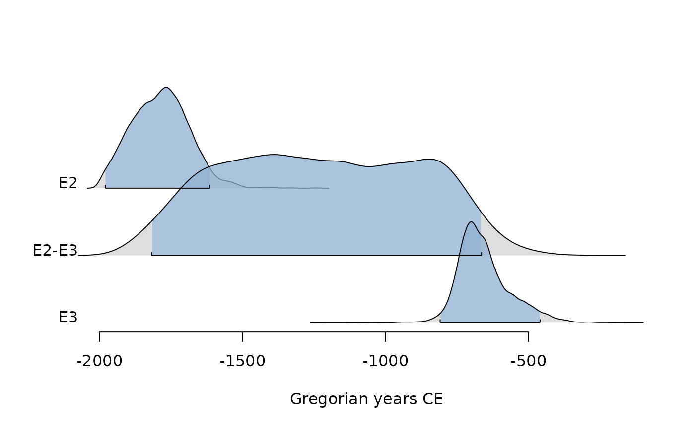

Interpolate Between Two Dates
interpolate(x, y, ...)
# S4 method for class 'numeric,numeric'
interpolate(x, y)
# S4 method for class 'EventsMCMC,missing'
interpolate(x, e1 = 1, e2 = 2)
Arguments
- x
A numeric vector giving the output of the MCMC algorithm for the
first parameter.
- y
A numeric vector giving the output of the MCMC algorithm for the
second parameter.
- ...
Currently not used.
- e1, e2
An integer specifying.
Details
For a given output of MCMC algorithm, this function interpolates between
to events \(x\) and \(y\) (assuming \(x < y\)).
See also
Other age-depth modeling tools:
bury()
Examples
## Coerce to events
eve <- as_events(mcmc_events, calendar = CE(), iteration = 1)
eve <- eve[1:10000, ]
## Interpolate between two events
inter <- interpolate(eve, e1 = 2, e2 = 3)
plot(inter, level = 0.95, interval = "credible")
